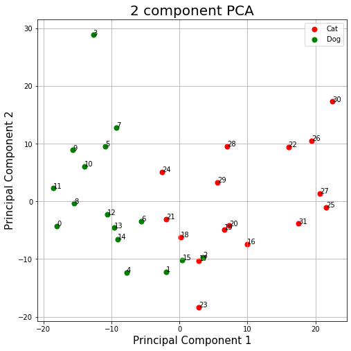

import numpy as np # Linear algebra library
import matplotlib.pyplot as plt # library for visualization
from sklearn.decomposition import PCA # PCA library
import pandas as pd # Data frame library
import math # Library for math functions
import random # Library for pseudo random numbers
 photo credit: Raunak Joshi
photo credit: Raunak Joshi
In this lab, we are going to view another explanation about Principal Component Analysis(PCA). PCA is a statistical technique invented in 1901 by Karl Pearson that uses orthogonal transformations to map a set of variables into a set of linearly uncorrelated variables called Principal Components.
PCA is based on the Singular Value Decomposition (SVD) of the Covariance Matrix of the original dataset. The Eigenvectors of such decomposition are used as a rotation matrix. The Eigenvectors are arranged in the rotation matrix in decreasing order according to its explained variance. This last term is related to the EigenValues of the SVD.
PCA is a potent technique with applications ranging from simple space transformation, dimensionality reduction, and mixture separation from spectral information.
Follow this lab to view another explanation for PCA. In this case, we are going to use the concept of rotation matrices applied to correlated random data, just as illustrated in the next picture.

Source: https://en.wikipedia.org/wiki/Principal_component_analysis
As usual, we must import the libraries that will use in this lab.
To start, let us consider a pair of random variables x, y. Consider the base case when y = n * x. The x and y variables will be perfectly correlated to each other since y is just a scaling of x.
np.random.seed(1)
n = 1 # The amount of the correlation
x = np.random.uniform(1,2,1000) # Generate 1000 samples from a uniform random variable
y = x.copy() * n # Make y = n * x
# PCA works better if the data is centered
x = x - np.mean(x) # Center x. Remove its mean
y = y - np.mean(y) # Center y. Remove its mean
data = pd.DataFrame({'x': x, 'y': y}) # Create a data frame with x and y
plt.scatter(data.x, data.y) # Plot the original correlated data in blue
pca = PCA(n_components=2) # Instantiate a PCA. Choose to get 2 output variables
# Create the transformation model for this data. Internally, it gets the rotation
# matrix and the explained variance
pcaTr = pca.fit(data)
rotatedData = pcaTr.transform(data) # Transform the data base on the rotation matrix of pcaTr
# # Create a data frame with the new variables. We call these new variables PC1 and PC2
dataPCA = pd.DataFrame(data = rotatedData, columns = ['PC1', 'PC2'])
# Plot the transformed data in orange
plt.scatter(dataPCA.PC1, dataPCA.PC2)
plt.show(){kind=link}
Now, what is the direction in which the variables point?
Understanding the transformation model pcaTr
As mentioned before, a PCA model is composed of a rotation matrix and its corresponding explained variance. In the next module, we will explain the details of the rotation matrices.
pcaTr.components_has the rotation matrixpcaTr.explained_variance_has the explained variance of each principal component
print('Eigenvectors or principal component: First row must be in the direction of [1, n]')
print(pcaTr.components_)
print()
print('Eigenvalues or explained variance')
print(pcaTr.explained_variance_)Eigenvectors or principal component: First row must be in the direction of [1, n]
[[-0.70710678 -0.70710678]
[-0.70710678 0.70710678]]
Eigenvalues or explained variance
[1.66465230e-01 4.66587934e-33]cos(45^o) = 0.7071
The rotation matrix is equal to:
R = \begin{bmatrix} cos(45^o) & sin(45^o) \\ -sin(45^o) & cos(45^o) \end{bmatrix}
And 45^o is the same angle that form the variables y = 1 * x.
Then, PCA has identified the angle in which point the original variables.
And the explained Variance is around [0.166 0]. Remember that the Variance of a uniform random variable x ~ U(1, 2), as our x and y, is equal to:
Var(x) = \frac {(2 - 1)^2}{12} = 0.083333
Then the explained variance given by the PCA can be interpret as
[Var(x) + Var(y), \ 0] = [0.0833 + 0.0833, \ 0] = [0.166, \ 0]
Which means that all the explained variance of our new system is explained by our first principal component.
{kind=link}
{kind=link}
PCA as a strategy for dimensionality reduction
The principal components contained in the rotation matrix, are decreasingly sorted depending on its explained Variance. It usually means that the first components retain most of the power of the data to explain the patterns that generalize the data. Nevertheless, for some applications, we are interested in the patterns that explain much less Variance, for example, in novelty detection.
In the next figure, we can see the original data and its corresponding projection using dimenson axes as principal components. In other words, data comprised of a single variable.
nPoints = len(data)
# Plot the original data in blue
plt.scatter(data[:,0], data[:,1])
#Plot the projection along the first component in orange
plt.scatter(data[:,0], np.zeros(nPoints))
#Plot the projection along the second component in green
plt.scatter(np.zeros(nPoints), data[:,1])
plt.show(){kind=link}
PCA as a strategy to plot complex data
The next chart shows a sample diagram displaying a dataset of pictures of cats and dogs. Raw pictures are composed of hundreds or even thousands of features. However, PCA allows us to reduce that many features to only two. In that reduced space of uncorrelated variables, we can easily separate cats and dogs.

You will learn how to generate a chart like this with word vectors in this week’s programming assignment.
Optional Reading:
To get more clarity on the Rotation Matrix, you can read the optional reading item which follows this notebook, The Rotation Matrix.
Citation
BibTeX citation:
@online{2025,
author = {},
title = {Another Explanation about {PCA}},
date = {2025-01-29},
url = {https://orenbochman.github.io/notes-nlp/posts/c1w3/Another-explanation-about-PCA.html},
langid = {en}
}
For attribution, please cite this work as:
“Another Explanation about PCA.” 2025. January 29, 2025. https://orenbochman.github.io/notes-nlp/posts/c1w3/Another-explanation-about-PCA.html.